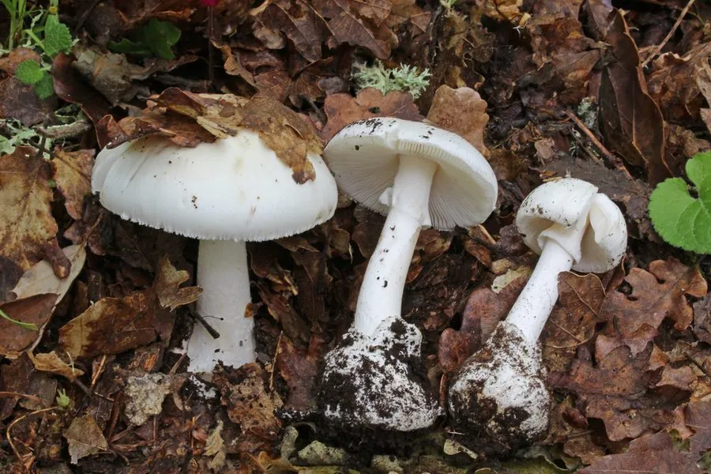

真菌 · 真菌界
白毒伞 Amanita verna

通体洁白、形貌朴素的剧毒鹅膏，含鹅膏毒肽，误食一小朵就可能致命，是造成毒蘑菇中毒死亡的主要元凶之一。
- 分类
- 门担子菌门纲伞菌纲目伞菌目科鹅膏科属鹅膏属
- 栖息环境
- 针叶林和阔叶林的地面，春季至初夏出菇
- 地理分布
- 中国北方和南方多地的林区，东亚其他地区也有分布
- 保护级别
- 暂无评估（IUCN 未评估，有毒物种）
物种志
白毒伞是担子菌门伞菌目的剧毒真菌，子实体单生或群生。菌盖呈纯白色，半球形至平展，直径 5–12 cm，表面光滑；菌褶白色，离生；菌柄白色，细长，基部膨大并带有白色的菌托；菌环白色，膜质，位于菌柄上部。整株洁白、形态清秀，看起来十分“无害”。
白毒伞多生于针叶林和阔叶林的地面，春季至初夏出菇，在中国北方和南方都有分布。它含有鹅膏毒肽，会破坏肝细胞，误食一小朵就可能导致急性肝衰竭甚至死亡，是造成中国毒蘑菇中毒死亡的主要元凶之一。白毒伞与一些可食的白色蘑菇外形相似，极易误采；毒菌中毒没有特效解毒药，必须立即就医。预防的关键是：不采摘、不购买、不食用不认识的野生菌。
形态与习性
- 菌盖纯白色，直径 5–12 cm，表面光滑
- 菌褶白色，离生
- 菌柄白色细长，基部有白色菌托
- 菌环白色膜质，位于菌柄上部
- 毒性含鹅膏毒肽，破坏肝细胞
- 中毒后果误食少量即可致急性肝衰竭，无特效解毒药
- 出菇期春季至初夏
趣味知识
- 白毒伞通体洁白、外观清秀，却含有致命的鹅膏毒肽。
- 误食一小朵就可能引起急性肝衰竭甚至死亡。
- 它与一些可食的白色蘑菇外形相似，极易误采。
- 不采摘、不购买、不食用不认识的野生菌是预防关键。